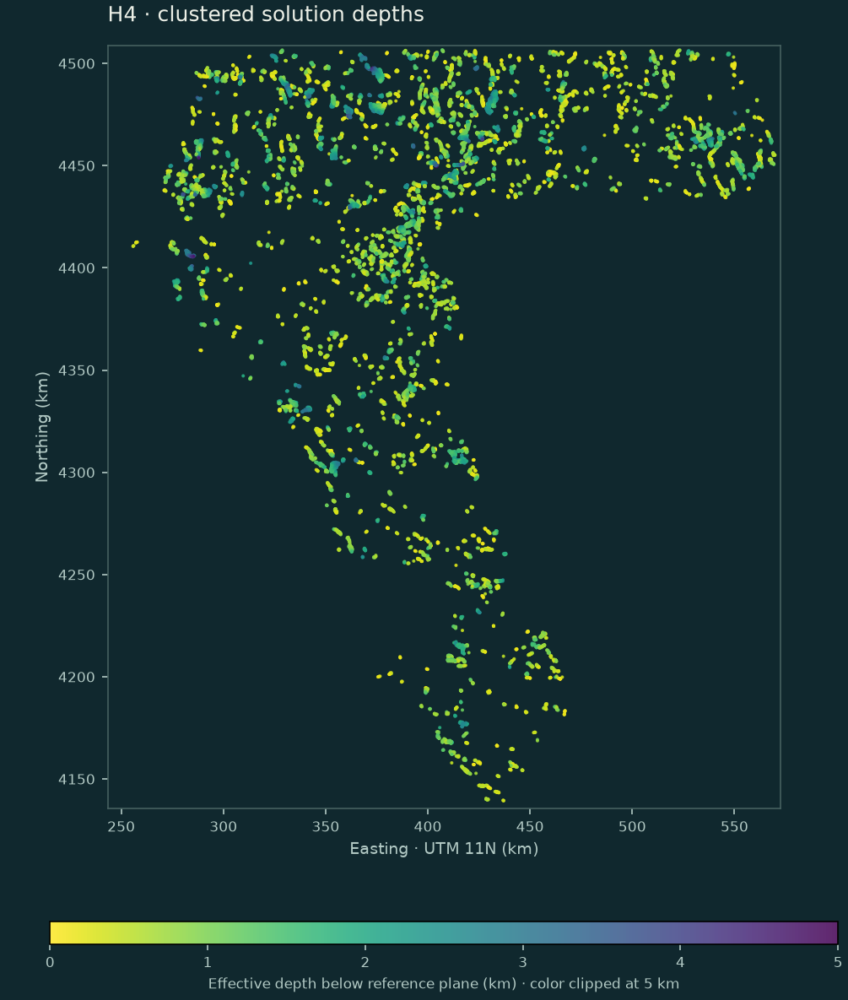

METHOD / POTENTIAL-FIELD INVERSION
A cloud of depths.
Not a thresholded edge map.
The prediction values come from fitted source locations and their depth consistency, not magnetic or gravity gradient magnitudes.
The equation the old model omitted
At z = 0: x Fₓ + y Fᵧ = x₀ Fₓ + y₀ Fᵧ + z₀ Fz + A
Reid et al. (1990), equation 2 and step 3b, solve for A for a general SI=0 magnetic contact. H4 profiles out that offset by centering the gradient columns and right-hand side. Horizontal coordinates are east/north in metres; depth is positive down.
A straight contact does not identify position along strike. The local horizontal derivative tensor selects a cross-strike/depth solve when its minor/major eigenvalue ratio is at most 0.10; otherwise H4 fits 3-D position. The unresolved coordinate is anchored at the window center and recorded as rank 2, not reported as measured.
Gravity requires a different physical interpretation
SI=0 on raw gravity is not the same magnetic-contact model. Reid & Thurston (2014) correct the finite gravity-step index and explain the need for generalized source geometry. H4 inverts the first vertical derivative of gravity at SI=0 as a local top-edge approximation. A finite bottom edge, remanence, regional trends and terrain can still bias these solutions.
Locked parameters, not a holdout search
| Operation | Magnetics | Gravity |
|---|---|---|
| Named source band | tmi, measured band 14 | iso_grav_anom, measured band 13 |
| Upward continuation | 200 m | 500 m, then dG/dz |
| Full-resolution windows / stride | 15 and 25 cells / 5 | 31 and 51 cells / 5 |
| Invalid-data guard | 1,500 m plus full window | 3,000 m plus full window |
| Effective depth interval | 100–5,000 m | 100–8,000 m |
| Clustered solutions | 12,167 | 8,450 |
| Median effective depth | 677.4 m | 1426.5 m |
The centered relative fit residual must be ≤0.30; scaled design condition ≤1,000; location within a half-window; conditional depth error ≤max(100 m, 25% of depth). Errors exclude correlated survey noise and model mismatch. Continuation height is subtracted exactly once.
From point support to continuous confidence
Neighbours within 600 m XY and max(250 m, 35% of depth) supply a consistency weight. At least two other neighbours and the other window scale are required. Weights penalize depth, fit error, depth uncertainty and robust depth scatter; neighbour count saturates to avoid unbounded repeated-window voting.
Bilinear point deposition and a 200 m Gaussian kernel make the density field. Each family is normalized by its positive 99.5th percentile, clipped to [0,1], then combined as (M + G + √(MG))/3. After exact known-pixel suppression, the field is max-normalized. Unsupported cells are zero. Only outside-footprint cells are NaN.
The result has 865,145 positive cells, 857,785 distinct finite values, and total confidence mass 29,350.41. It is not a calibrated probability and not a binary map.
Every parameter, rejection count and input hash · Preregistration

Read the actual cloud.
The compressed CSV contains all 46,656 QC-passing solutions, including points assigned zero clustering weight. It records family, window, projected XY, effective depth, conditional error, residual, condition, contact offset, rank, neighbours and weight.
Unresolved strike position and a terrain-draped survey limit interpretation. These depths are relative to the input reference observation plane—not independently verified ground-depth estimates.